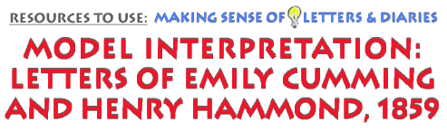

Reading
particular, "sample" letters will show how our strategies
can be put to use. Emily Cumming and Harry Hammond were young, well-to-do
Georgians who fell in love in 1859. Their letters to each other are
an excellent way to see how two people employed the highly stylized
correspondence of this century’s courtship to speak about events
and relationships in their lives, and to experiment with who they wished
to be. In doing so, they eagerly used but also gradually broke free
from the conventions of letter-writing form – with much commentary
on it – and thus established a more intimate conversation. The
writing is in this way typical of a great many courtships. The Hammond/Cumming
letters number about two dozen, and there are references to others which
now seem to have been lost. The letters date from April to November
1859 and include ones from both Emily and Harry, who lived about 100
miles apart, she in Augusta, the daughter of a lawyer, he in Athens
where he taught at Franklin College. Each came from a prominent family
and both describe themselves (and each other) as introspective and socially
shy.*
An
early letter from Harry to Emily echoes many similar letters from young
men to the women they hope will become their sweethearts.
"My Dear Miss Cumming:
Ever since I came back from Augusta, I have been taking all the holiday
I could to think over and congratulate myself upon the pleasant hours
which your charity allowed me to spend in your company while I was there.
I have been eating your candy. And I have been reading the novel (Kingsley’s)
you lent me. Besides this nothing but work and ennui have filled up
the last ten days. You will pardon me then for expressing the overflowingness
of my gratitude to you. Indeed so much has this feeling taken possession
of me, that I have more than once had a mind to turn down this page
of my heart keeping there what was already written on it, and filling
the other side with altogether new characters. So that some day, when
I looked back in review, I might find one which contained nothing but
what was pleasant. However, I could not keep my resolution, for when
I had read the novel, and when I found the candy was going fast, and
when I discovered that my recollections were continually fluttering
up and weaving themselves in the future, I was obliged to yield to the
necessity of again approaching you to seek for alms, which I now most
ungratefully but humbly do."*
One sign that this letter was written early in a courtship (besides
his calling her "Miss Cumming") is that, on a quick reading,
it is not clear just what Harry is saying. This is because the most
important events related here are not material, but emotional. He’s
been reading and eating candy; but the point is, he has been thinking
of her. The daily events themselves are trivial. He writes them as a
scaffold for his feelings, obliquely but deftly told. The letter thus
lingers over "small" events in order to imply a much more
significant, hoped-for relationship.
Harry does this, too, by portraying Emily and himself in a certain way.
In the letter-writing style of would-be lovers in this time and place,
Harry, as the man, initiates the correspondence, but in the character
of a humble supplicant. She is portrayed as his benefactor, a kind of
lofty philanthropist: she has "charity" to dispense, "alms"
of an emotional kind. She is everywhere for him: in his recent past
(their visit), his present (his thoughts) and his imagined future (in
the way he is "obliged" to call on her again). She
will have the power if a courtship follows, the letter assures her.
As so powerful a person, in fact, she is obliged to be magnanimous and
hear him out. Although his prose is calm and his voice hushed, Harry
reveals himself to be no passive beggar. He is full of gratitude and
yet he is willing to risk acting "ungratefully" by asking
for more. He seems to be needy, and yet he is self-possessed enough
to "congratulate" himself on having spent time with her. He
can be mildly but pointedly directive: "you will pardon me."
On closer look, his level language is shot through with passionate words:
"overflowingness," "possession," "fluttering
up," "yield." Most revealingly of all, Harry compares
his emotions, his "heart," to a letter. So openly are his
feelings for her written on his heart’s "page," he tells
Emily, that he considered "turn[ing] down this page" and starting
again. But it is too late. He already has written it.
If Emily had not responded, their courtship would have faltered. But
she wrote back to him in a similar fashion; they saw each other occasionally,
and their relationship grew from – was made by – the letters
themselves. There are other letters like this one in which Harry declares
he is a "poor" supplicant, Emily protests that she cannot
be "worthy" of being his ideal, and the courtship stays within
the nineteenth century’s powerful script of women and men’s
essential difference. But, gradually, by the summer of 1859, a new way
of writing opens up to Emily and Harry. They begin writing more about
everyday events in a way which reveals to each other that they are not
ideal lovers, but real people. For instance, she tells a self-deprecating
tale of being forced to go "visiting" around the neighborhood
with her "inexorable' mother when she actually despises such ladylike
obligations. He gives comical accounts of himself at awkward dancing
parties at the college, and he tells her his doubts about his teaching.
They write of books, of mutual friends, of nature. Throughout, they
write about writing. The act of writing, and of imagining the other’s
presence through the physical letter, grows stronger as the chief theme
in a relationship never free from the physical distance between them.
Letters and writing are a way to possess each other and to imagine losing
each other, too.
So Harry reads one Emily’s letters and writes of how he tries to
"form a picture of you. I can just catch a glimpse of you standing
by Maria, and opening that yellow envelope, then a moment more at your
writing desk, and even then the representation becomes dim, for I have
never seen that desk, and then a curtain a hundred miles thick falls
between us." Writing of their relationship broke through the curtain,
but did not make it vanish altogether. Emily replied in the same manner,
at once obliquely erotic and yet safely screened by words and, in a
way, by the material letters themselves. "My letters," she
told Harry, "have two meanings to me and I can connect no other
with them, first I write them because it is delightful to feel that
the words which I am one day scratching away here, are the next [day]
to bring to you, if not much meaning, and interest, at least a faint
idea of how constantly I think of you, and love you, but most of all
they mean that you will with this idea fresh in your mind, after reading
them, sit down and with a few touches of that magic pen of yours, make
me the most elated of little women."*
As a means of making a relationship between the sexes, then, courtship
letters demanded an imagination and effort beyond casual meetings and
face-to-face talk. They became a lasting commentary on the lovers, on
love, and on how letters entitled – and also limited – women
and men to speak as worthy and passionate. In this way, letters add
to our historical view of gender – of women and men and the differences
thought to belong to their different "natures." Letters reveal
how important it is to think about gender in the past not as a status,
but as a process. Sometimes courting couples ran aground on their
words: what they said to each other somehow did not bridge the distance
between them, or their words unraveled to reveal some incompatibility
or misconnection. For others, courtship moved quickly to marriage, and,
notably, there was no "marriage correspondence" which took
the place of courtship’s inscription of need and devotion. But,
in any case, letters show relations between the sexes actually being
shaped.
Emily and Harry went somewhat beyond the typical "script"
of courtship correspondence, testing and bending the limits of letter-writing.
Most striking is how they moved from writing about ordinary events to
write about ordinary feelings, stripping away the poses of courtship
and along with it the desire to appear flawless. They wrote instead
a more candid dialogue about their fears and their flaws. Thus, such
letters add to our historical understanding by showing us the power
and the limitations of the Ideal Woman and the Ideal Man in this time
and place. Emily risked admitting how difficult she found it to be an
"ideal" woman and write proper letters. She wanted to be simply
candid, she told him, but confessed that after writing a letter to him
"it afterwards frightens me what may be the impression....Are you
certain you did not say after reading my last letter, 'What bathos!'"She
wanted to be, but feared being, "frank" and "unexpectedly
open" in her letters. Harry admitted much the same thing. By writing
to her, though, he discovered that love was not at all like it appeared
in novels, not "climax;" rather "true love is like life...that
unfolds and strengthens hour by hour."*
There is more to these letters, of course, and more to Emily and Harry:
a shared sense of humor, a shared wariness of their powerful fathers,
much talk of enjoying nature and reading. We can step back a bit and
ask some questions about the wider context of these lives, which imply
where we can go for corroboration of the social and cultural picture
painted by this correspondence. For instance, although Emily and Harry
achieved trust in the face of cultural barriers between women and men,
their letters suggest the possibility of the opposite. There was a considerable
distance (of several kinds) between the sexes in the upper class, rural
South in the nineteenth century. We might compare this southern context
to the experience of other elites elsewhere in the United States, or
to the experience of other southerners, black and white, who were not
so well-to-do. Asking further questions suggest other ways of opening
up the context. What do such letters imply about growing up male
or female in this era? What family and childrearing experiences might
we discover that would help explain the rituals of courtship? What do
courtship letters suggest about how southerners of the slave-owning
class shaped identities by relying on certain benefits that slavery
gave to them: their literacy, their sense of class power, and (as Harry
and Emily hint) the use of their human property to deliver letters and
wait upon replies? How might other cultural forms which inscribed gender
and class – novels, conversation, tableaux – have joined with
letters to articulate the broad, literate power of the southern upper
class? These and other specific questions concerning society and culture
in mid-nineteenth-century Georgia further frame the letters of Harry
Hammond and Emily Cumming so that their historical world becomes, for
us, even more solid and real.